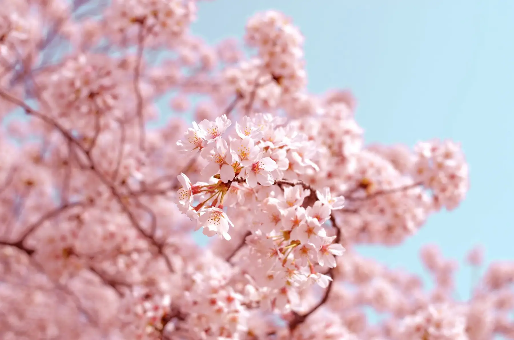

01 / 04
Maret – Mei
Musim Semi
Musim sakura. Di Tokyo dan Kyoto, sakura umumnya mekar sekitar akhir Maret hingga awal April, kemudian bergerak ke utara — di Hokkaido, sakura umumnya baru mekar sekitar awal Mei.
Catatan: Golden Week (akhir April – awal Mei) merupakan periode libur panjang di Jepang, sehingga suasana lebih ramai dan tarif hotel meningkat. Kami menyarankan pemesanan jauh hari.